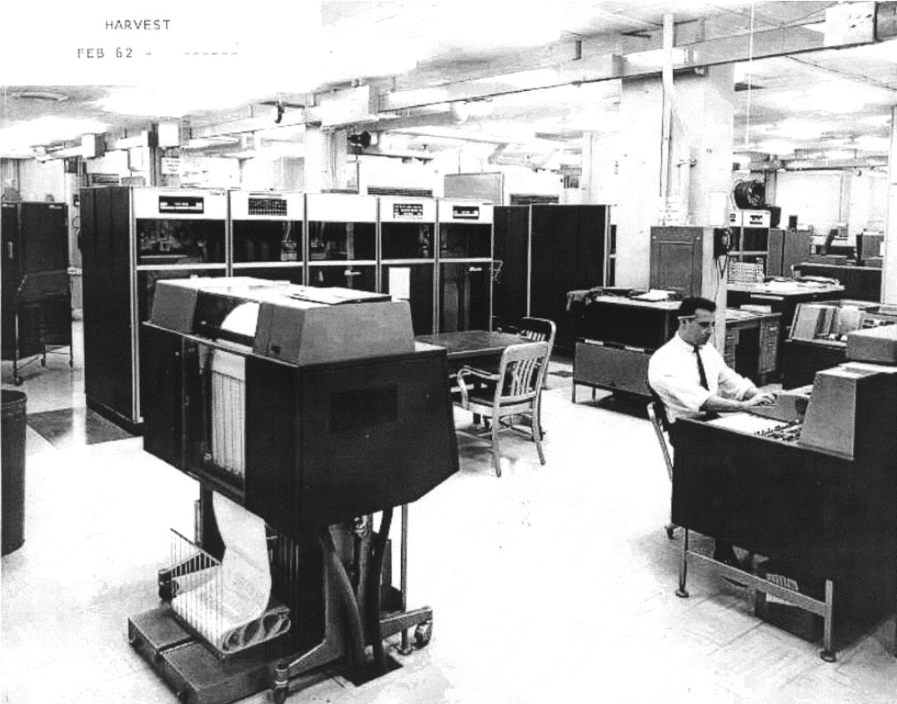
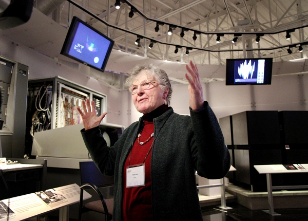

Early Life
Frances Elizabeth ("Fran") Allen was born August 4, 1932. The oldest of six children, she grew up on a farm in Peru, New York. Her father was a farmer, and her mother an elementary-school teacher. In high school she was greatly inspired by her math teacher, and set out to become a math teacher herself.
She attended the New York State College for Teachers for four years and earned a BA in mathematics with a minor in physics as well as education credits. She then taught math for two years at the same high school she had attended. During this time she realized that she would need a master's degree to be fully certified as a teacher. After taking some summer courses at Columbia University, she enrolled at the University of Michigan at Ann Arbor and earned an MA in mathematics.
It was here that she also took courses in computing, some of the first ever offered and learned how to program. IBM held job interviews on the Michigan campus and offered her a job in research. She accepted with the idea that she would earn enough money to pay off her student debts and then return to teaching. Instead, she stayed at IBM for the next 45 years.
IBM

Fran joined IBM in 1957, her first assignment was to teach research scientists within IBM how to use the MAD programming language and indirectly encourage IBM customers to use it. She did what teachers often must: she learned the subject matter just a few days ahead of her students. As part of this process, she read the source code for the FORTRAN compiler. In her words, "It set my interest in compiling, and it also set the way I thought about compilers, because it was organized in a way that has a direct heritage to modern compilers."
Some of the projects she worked on for IBM included the STRETCH-HARVEST project, where she helped design and build ALPHA, a very high-level code breaking language. One of its main abilities was being able to create new alphabets beyond the system defined ones.
Personal Endeavours

When she wasn’t exploring new computing opportunities, Fran’s passions were climbing mountains and studying environmental issues. She was a member of the American Alpine Club and the Alpine Club of Canada, participating in exploratory expeditions to the Artic, Austria, China and Tibet.
“Professionally, Fran spent a lifetime working to advance the field of computing and pioneer new breakthroughs. Personally, she was equally focused on inspiring and motivating young people – especially women – to do the same.”